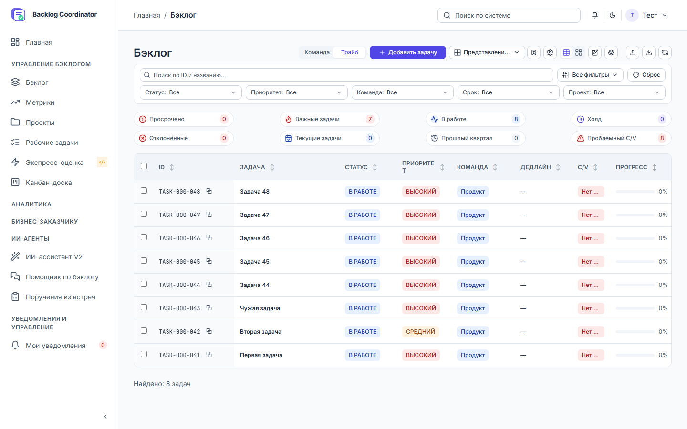

Реализация верхних панелейРеализация верхних панелей
Бэклог — исходный эталон. Остальные страницы — реализованные изменения. Демонстрационные данные, 11 ноября 2026.

Снимки исполняемого приложения на изолированных данных. Переключатели галереи работают локально.